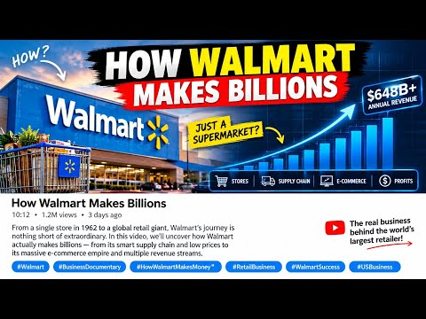
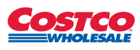
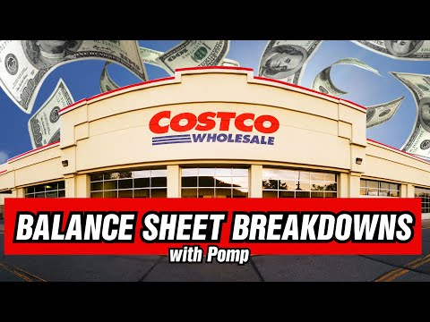
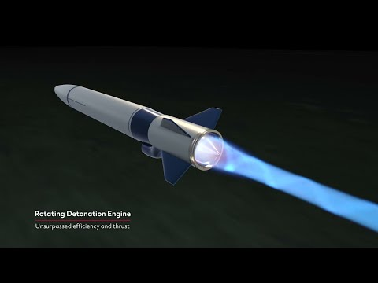

On the graph
The weights of the portfolio with the best Sharpe ratio. The largest positions are Walmart (8.3%), Costco (8.1%), RTX (7.7%), Goldman Sachs (6.8%) and Progressive (6.8%). The smallest are Interactive Brokers (1.2%), Apple (0.8%) and Alphabet (0.5%).
Our analysis
The optimisation favours steady growers such as Walmart and Costco, which stabilise the portfolio, while the high-growth stocks bring the return. This page also shows the latest news on the three largest companies (Walmart, Costco and RTX), with a short video on each.